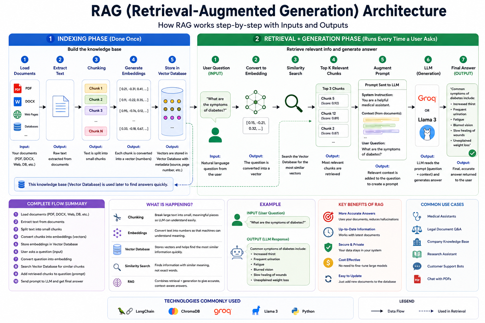

Master one of the most important technologies powering modern AI systems. Understand Chunking, Embeddings, Vector Databases, LangChain, ChromaDB, Groq, Llama 3, and Real World Projects.
Start LearningRAG stands for Retrieval-Augmented Generation.
It is one of the most important AI architectures used today.
Instead of relying only on the knowledge already present inside a Large Language Model, RAG allows the model to search external information sources before generating answers.
Think of RAG as an Open Book Exam.
Instead of answering purely from memory, the AI first searches documents, retrieves relevant information, and then generates an answer.
LLMs sometimes generate incorrect information.
Models may not know recent information.
Company documents are not included in training.
Retraining LLMs is expensive and slow.
Understanding the entire workflow before diving into individual concepts.

Search relevant information from knowledge sources.
Add retrieved information into the prompt.
Generate final answer using the LLM.
INPUT What are symptoms of diabetes? -------------------------------- RAG SYSTEM Searches Medical Documents Retrieves Relevant Chunks Adds Context To Prompt -------------------------------- OUTPUT Common symptoms include: • Excessive thirst • Frequent urination • Fatigue • Blurred vision • Slow wound healing
Chunking is the process of breaking large documents into smaller pieces before storing them inside a Vector Database.
One of the biggest limitations of Large Language Models is the Context Window.
An LLM cannot read unlimited information at once.
If we upload a 500-page PDF directly, the model cannot process everything efficiently.
Therefore, we split the document into smaller parts.
These smaller parts are called Chunks.
Searching small chunks is much faster than searching an entire document.
Relevant information can be found more accurately.
Reduces prompt size and API cost.
Only useful information reaches the LLM.
INPUT 100 Page Medical PDF -------------------------------- Page 1 Page 2 Page 3 ... Page 100 -------------------------------- OUTPUT Chunk 1 Chunk 2 Chunk 3 Chunk 4 Chunk 5 Chunk 6 ... Chunk N
| Method | Description | Usage |
|---|---|---|
| Fixed Size Chunking | Split every fixed number of characters | Simple projects |
| Token Chunking | Split based on token count | Production RAG |
| Sentence Chunking | Split using sentence boundaries | QA Systems |
| Paragraph Chunking | Split by paragraphs | Articles & Blogs |
| Recursive Chunking | Most popular LangChain approach | General Purpose |
| Semantic Chunking | Split by meaning/context | Advanced Systems |
Sometimes important information lies between two chunks.
To avoid losing context, we intentionally repeat some content.
Chunk 1 AI is transforming healthcare. Doctors use AI for diagnosis. -------------------------------- Chunk 2 Doctors use AI for diagnosis. AI improves patient outcomes.
Notice how one sentence appears in both chunks. This is called Chunk Overlap.
Computers do not understand words.
Computers understand numbers.
Embeddings convert human language into mathematical vectors.
These vectors capture the meaning of words and sentences.
INPUT Dog ↓ Embedding Model ↓ OUTPUT [0.23, 0.81, 0.55, 0.72...] -------------------------------- INPUT Cat ↓ Embedding Model ↓ OUTPUT [0.24, 0.80, 0.57, 0.71...]
Notice something interesting.
Dog and Cat produce similar vectors.
This happens because both have similar meanings.
| Model | Company | Use Case |
|---|---|---|
| text-embedding-3-small | OpenAI | General RAG |
| text-embedding-3-large | OpenAI | Advanced Retrieval |
| BGE | BAAI | Open Source RAG |
| E5 | Microsoft | Search Systems |
| Sentence Transformers | Hugging Face | Local RAG |
After generating embeddings, we need a place to store them.
Traditional databases store text.
Vector databases store embeddings.
These embeddings are used for similarity search.
| Traditional DB | Vector DB |
|---|---|
| Stores Text | Stores Vectors |
| Keyword Search | Semantic Search |
| Exact Matching | Meaning Matching |
| SQL Queries | Similarity Search |
| Database | Description | Best For |
|---|---|---|
| ChromaDB | Easy local vector database | Learning Projects |
| FAISS | Facebook vector search engine | Fast Search |
| Pinecone | Managed cloud solution | Production Apps |
| Qdrant | Open source vector DB | Enterprise RAG |
| Weaviate | AI Native Database | Large Scale Systems |
Similarity Search is the heart of RAG.
Instead of searching exact words, it searches meaning.
QUESTION What are symptoms of diabetes? ↓ Embedding Generated ↓ Search Vector Database ↓ Find Similar Medical Chunks ↓ Retrieve Top Results
Requires exact words.
Understands meaning.
Fine Tuning is the process of taking an already trained Large Language Model and training it again on a custom dataset.
Instead of teaching the model from scratch, we improve an existing model for a specific task.
Think of it like a graduate student.
The student already knows mathematics, science, history, and languages.
Now we give specialized training to become a doctor.
The student doesn't start learning from zero.
Similarly, Fine Tuning teaches a pretrained model a specialized skill.
BASE MODEL General Knowledge ↓ Fine Tuning Dataset Medical Reports ↓ TRAINING ↓ MEDICAL MODEL Understands Medical Terminology Better
Many beginners confuse RAG and Fine Tuning.
Both improve AI systems but solve different problems.
Fine Tuning changes the model.
RAG keeps the model unchanged and provides external knowledge.
| Feature | RAG | Fine Tuning |
|---|---|---|
| Cost | Low | High |
| Training Required | No | Yes |
| Latest Information | Easy | Difficult |
| Private Documents | Excellent | Good |
| Setup Time | Fast | Slow |
| Maintenance | Easy | Complex |
| Best Use Case | Document Retrieval | Behavior Learning |
| Traditional Search | RAG |
|---|---|
| Keyword Matching | Semantic Search |
| Returns Documents | Returns Answers |
| User Reads Results | AI Reads Results |
| No Reasoning | LLM Reasoning |
| Static Search | Dynamic Search |
LangChain is one of the most popular frameworks for building AI applications.
It helps developers connect:
Most modern RAG applications are built using LangChain.
DOCUMENTS ↓ LOADER ↓ CHUNKING ↓ EMBEDDINGS ↓ VECTOR DATABASE ↓ USER QUESTION ↓ QUERY EMBEDDING ↓ SIMILARITY SEARCH ↓ TOP MATCHING CHUNKS ↓ PROMPT AUGMENTATION ↓ LLM ↓ FINAL RESPONSE
Ask questions from PDFs.
Analyze reports and medical documents.
Search scientific papers.
Search laws and contracts.
Study assistants and tutors.
Search internal company documents.
Retrieval-Augmented Generation is a technique that combines information retrieval with LLMs.
To reduce hallucinations and use external knowledge.
Splitting large documents into smaller pieces.
Numerical representations of text.
A database that stores embeddings.
RAG retrieves knowledge. Fine Tuning modifies the model.
Now that we understand RAG, let's build a real-world application.
In this project, users upload a Blood Report PDF and ask questions about the report.
The RAG system retrieves relevant medical information from the report and provides intelligent explanations.
INPUT PDF Blood Report.pdf -------------------------------- USER QUESTION Is my hemoglobin normal? -------------------------------- RAG SYSTEM Retrieves Relevant Chunk Hemoglobin = 10.5 g/dL Normal Range = 12-16 g/dL -------------------------------- OUTPUT Your hemoglobin appears lower than the normal range. This may indicate anemia. Consult a healthcare professional for proper evaluation.
pip install langchain pip install chromadb pip install sentence-transformers pip install groq pip install pdfplumber pip install gradio pip install langchain-community pip install langchain-text-splitters
| Technology | Purpose |
|---|---|
| Python | Programming Language |
| LangChain | RAG Framework |
| ChromaDB | Vector Database |
| Sentence Transformers | Embeddings |
| Groq | LLM API |
| Llama 3 | Language Model |
| Gradio | User Interface |
| PDFPlumber | PDF Processing |
PDF Upload ↓ Extract Text ↓ Chunking ↓ Embeddings ↓ Store in ChromaDB ↓ User Question ↓ Question Embedding ↓ Similarity Search ↓ Top Chunks Retrieved ↓ Groq Llama 3 ↓ Final Answer
1. Load PDF 2. Extract Text 3. Create Chunks 4. Generate Embeddings 5. Store In ChromaDB 6. Accept User Question 7. Retrieve Similar Chunks 8. Send Context To Groq 9. Generate Answer 10. Display Result
RAG combines retrieval and generation.
LLMs may hallucinate or lack recent information.
It is simple and beginner friendly.
They help computers understand meaning.
Yes. That is one of its biggest advantages.
Explore AI, Machine Learning, Deep Learning, Generative AI, Large Language Models, Agentic AI, RAG, Python, Data Science and Real World Projects.
Continue Learning Through The Mevi Notes Portal.
Visit Mevi Notes PortalYou have successfully completed the Retrieval-Augmented Generation learning journey.
You now understand: